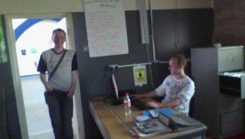

Personal profile
You will find me to be an organised, quick thinking individual who always welcomes a chance to gain new experiences/qualifications and tackle all challenges head on. I adapt quickly to new routines and work well as part of a team. My long term goals are to work in the Computer Industry and specialise in Security. I am currently seeking a position/role in a company such as yours that allows me to build on my existing skills base.
What i have done until now
When i left school I decided to go to Kingston Mauward College to study Equestrian Management, I studied for about 6 months before I decided that it wasn't for me. After this I went to the Bournemouth and Poole College to study for three years, where I became a quolified mechanic. I then worked in various places until I started at University to study Computing and Information Technology.
What i am doing now
I am a Project Assistant working at the Trinity Center on a local history project that works with the community to gather the stories of people that have worked at or been to the Trinity Center. I do this three days a week.
As well as working at the Trinity center, i am studying a BSC Hons Degree in Computing and Information Technology. This involves modules such as Systems Anaysis, Networking, Programing, Problem Solving and Web Development.
Where i would like to be in five years
I am hoping to have finished my BSC HONS Degree in Computing and move into specialising in Computer Security